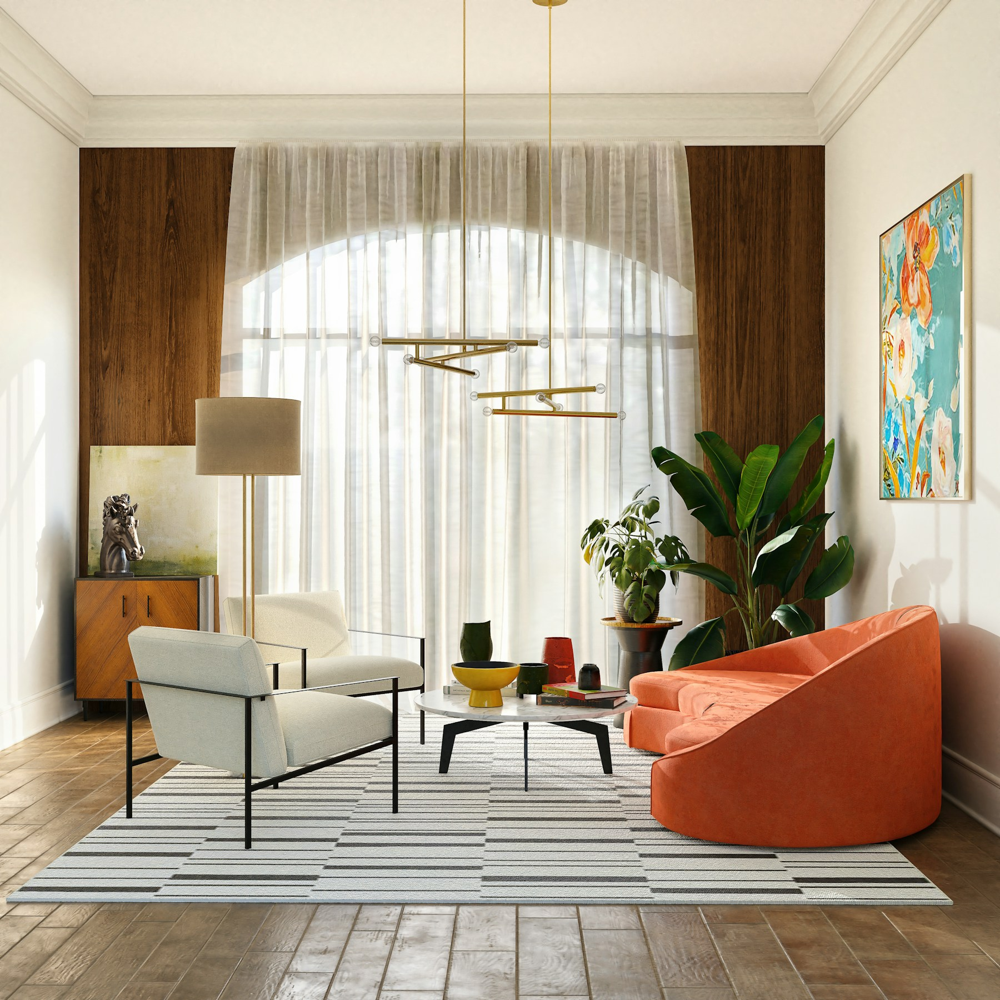

F.01Mobilya
Seçkiden
Doğal ahşap
₺4.850
Sabahın ilk ışığından akşamın sakinliğine. Evine ve günlük hayatına eşlik eden nesneler.
Seçkiyi keşfetFormun peşinde, hayatın içinde.
Doğal ahşap
Ahşap tonları & yalın form
Metal & yalın form
Yeşil dokuma kumaş

Bir okuma köşesiyle başlayan, uzayan bir sohbetle tamamlanan evler. Her nesnenin kendine ait bir yeri, her boşluğun nefes alacak bir alanı var. Bizim sevdiğimiz düzen tam da bu.
Malzemeye yakından bakAhşabın damarında, kumaşın dokusunda, metalin çizgisinde. Bir nesneye biraz daha yakından bak.
Her damarda başka bir iz. Açık ve koyu tonlar, yaşadığın alana doğal bir ritim verir.
Yakından bakınca ortaya çıkan küçük bir dünya. İnce dokular ve sakin tonlarla katmanlanan bir yaşam.
Işığı yakalayan yüzeyler ve net çizgiler. Sıcak dokuların yanında ölçülü bir karşılaşma.
Odalume tema tasarım demosu · Alışveriş işlemleri örnektir. Fotoğraflar ve lisanslar